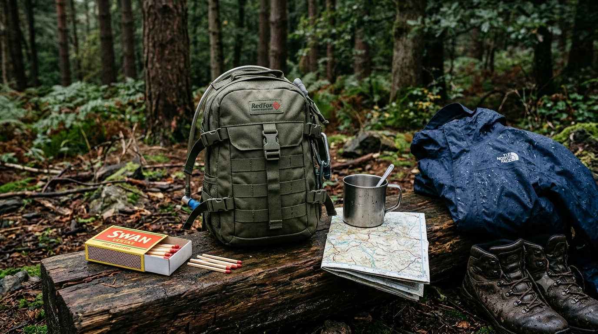
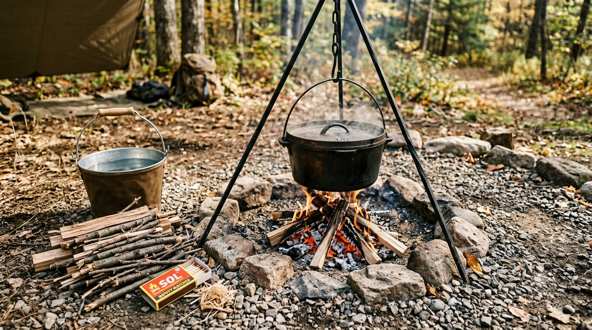
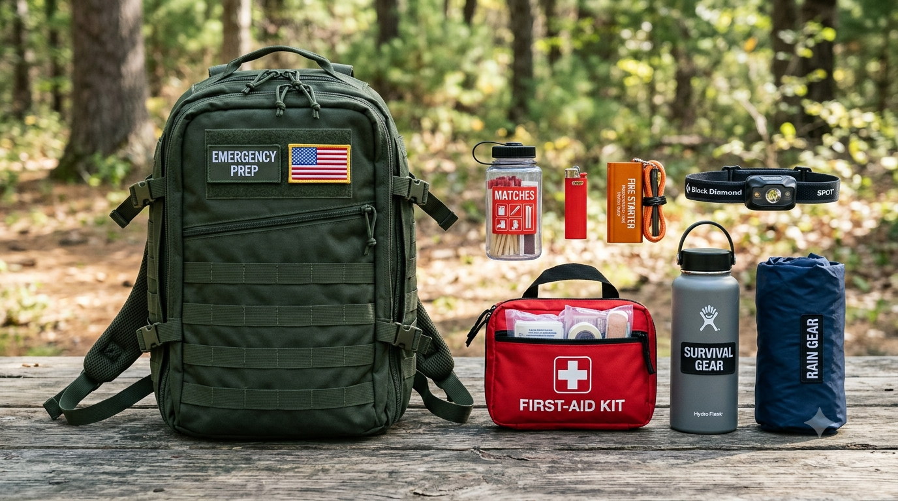

The Value of a Matchbox in an Apocalypse: A Tiny Tool That Matters
During a prolonged blackout, evacuation or disaster, an ordinary matchbox can become more useful than it seems. It is small, inexpensive and does not need batteries. Its value, however, is limited to one job: providing a way to ignite suitable tinder or fuel when making a fire is safe and necessary.
Matches do not create fuel, guarantee a fire or replace water, shelter and medical supplies. This guide explains where they help, how to protect them and why a backup fire-starting method matters.
Why a Matchbox Can Be Surprisingly Valuable

In an extended emergency, shops may close, electricity may fail and ordinary supplies can become difficult to replace. A matchbox is not more important than clean water, food, medication or shelter, but it offers a useful capability for very little weight or space.
Compact and inexpensive
A small supply fits easily in an emergency bag without taking space from essentials.
No batteries required
Matches work without charging or an electrical connection, although every match can be used only once.
Several possible uses
A controlled fire can help with cooking, heating water and, in suitable conditions, warmth.
Useful backup
Protected matches can provide another option if a lighter is empty, lost or damaged.
The match itself is only the starting point. You still need dry tinder, suitable fuel, preparation and a safe place to use the flame.
What a Fire Can Actually Help You Do
1. Cook or heat food
A fire or outdoor stove may help when normal cooking facilities are unavailable. For a lightweight emergency bag, ready-to-eat food is often simpler because it does not require fuel or cookware. Use a stable, purpose-built outdoor cooking setup and follow its instructions. Never cook over an open flame in a tent, vehicle or enclosed space.
2. Boil water when biological contamination is a concern
If a safe water supply is unavailable and public-health guidance recommends boiling, matches can help provide the heat. The U.S. CDC advises bringing clear water to a rolling boil for one minute, or three minutes above 6,500 feet (about 2,000 metres), then cooling and storing it in a clean, covered container. Follow local advice where it differs.
3. Provide limited warmth
A fire may help in a cold outdoor emergency, but it is not a substitute for dry clothing, insulation and shelter. Getting out of wind and rain and insulating yourself from the ground are often safer first steps. Smoke, wind and nearby vegetation can make a fire more dangerous than helpful.

What Matches Cannot Do
- Guarantee a fire: Wet tinder, damp fuel, wind or poor preparation can waste several matches.
- Provide fuel: A match only creates a brief flame. You must already have suitable tinder and fuel.
- Last forever: Matches are consumable. Once used, they are gone.
- Work reliably when wet: Ordinary matches and cardboard boxes can be ruined by moisture.
- Replace proper equipment: A matchbox is not a stove, cookware, torch, shelter or complete emergency plan.
Think of matches as a simple ignition tool—not a magic survival item. A second way to start a fire reduces the risk of depending on one small box.
How to Keep Matches Dry and Ready
Do not rely on the original cardboard box to protect matches from heavy rain or immersion. Keep a modest supply in a properly sealed, waterproof case. Include the striker surface if the match type requires one, and follow the product instructions.
- Use a purpose-built waterproof match case or a genuinely sealed dry container.
- Keep the container somewhere accessible but protected from crushing and accidental striking.
- Check it after rain, water crossings or rough travel; replace damp or damaged matches.
- Keep matches away from children, heat and other ignition sources.
Do not assume a zip-lock bag or a home waterproofing treatment will protect every type of match in every condition.
Matches vs Lighter vs Ferro Rod
Each option has advantages. The best choice is the one you can use reliably in the conditions you expect.
| Fire starter | Main advantage | Main limitation | Practical role |
|---|---|---|---|
| Safety matches | Simple, light and inexpensive. | Single-use; can be ruined by moisture and need the correct striker. | Protected backup or basic ignition option. |
| Disposable lighter | Quick and familiar; lights many times while fuel remains. | Can run out, break or become difficult to use when wet or very cold. | Convenient primary option for many people. |
| Ferro rod | Produces many sparks without a fuel reservoir. | Needs practice, a striker and fine, dry tinder. | Reusable backup for someone who has practised. |
| Storm matches | Some types resist wind or moisture better than ordinary matches. | Quality varies; still need suitable fuel and safe conditions. | Specialised option when suited to the environment. |
For most beginners, a familiar lighter plus a small protected supply of matches is a practical combination. A ferro rod is useful only if you have practised with it and know how to prepare tinder.
How to Carry Matches in an Emergency Bag

- Carry a modest supply in a secure waterproof case, with the correct striker when required.
- Keep a second ignition method that you know how to use.
- Bring suitable tinder and use a stable, purpose-built outdoor cooking setup where appropriate.
- Practise with your actual equipment in a permitted outdoor location before an emergency.
- Do not let fire-starting gear displace water, medication, first aid, food or weather protection.
Fire Safety When Normal Services Fail
Never light a match near leaking fuel, gas cylinders, flammable vapours or unknown chemicals. Do not use an open flame in a tent, car, room, garage or other enclosed or poorly ventilated space. Burning fuel can produce carbon monoxide, an invisible, odourless gas that can be fatal.
Outdoors, choose a stable area clear of dry vegetation and anything that can catch fire. Check local restrictions and weather conditions; do not light a fire in dry or windy conditions when it could spread. Keep children away, never leave a flame unattended and fully extinguish it before leaving. Follow any local fire ban.
Could Matches Become Valuable for Trade?
During a prolonged disruption, matches may become useful trade goods if shops and transport stop working and people need a way to start fires. Their value would depend on local demand, available alternatives and the needs of the person trading.
They would not automatically become a reliable currency. Water, food, medicine, batteries, fuel and practical skills may be more valuable at a given moment. Never trade away the ignition backup you need for your own safety; consider only genuine surplus.
Quick Matchbox Checklist
- Matches are dry, intact and stored in a secure waterproof case.
- The correct striker is included when required.
- You have another ignition method you know how to use.
- You have suitable tinder and a safe, permitted place to use a flame.
- You have practised and know when not to light a fire.
Helpful Sources
This is a general preparedness guide. Follow local emergency services and public-health directions during an actual emergency.
- Ready.gov — Build a Kit: general emergency supply checklist.
- U.S. Centers for Disease Control and Prevention — How to Make Water Safe in an Emergency: boiling guidance and its limitations.
- National Park Service — Campfire Safety: outdoor fire precautions.
This guide discusses preparedness in a general survival and fictional-apocalypse context. Always follow local laws, fire restrictions, product instructions, and official emergency advice. Fire can cause serious injury and property or environmental damage when used carelessly.
Suggested Quizzes
Ready for another challenge? Test your survival instincts and apocalypse knowledge.